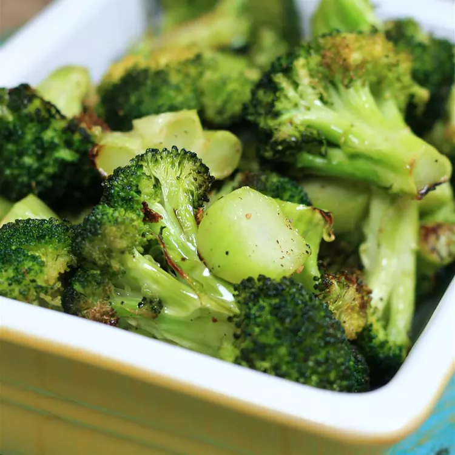

Easy Roasted Broccoli

Description
This is the easiest broccoli recipe.
So satisfying and easy to make,
great for getting the kids involed with cooking
Ingredients
- 14 ounces broccoli
- 1 tablespoon olive oil
- salt and ground black pepper to taste
Steps
- Preheat oven to 400 degrees F (200 degrees C)
- Cut broccoli florets from the stalk. Peel the stalk and slice into 1/4-inch slices.
Mix florets and stem pieces with olive oil in a bowl and transfer to a baking sheet;
season with salt and pepper.
- Roast in the preheated oven until broccoli is tender and lightly browned,
about 18 to 20 minutes.